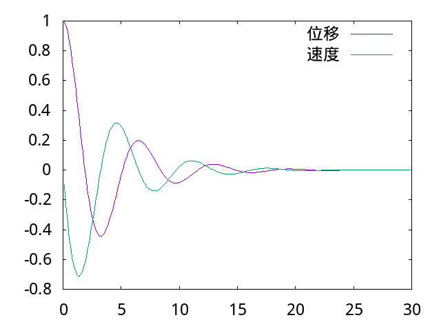

工程師的特質 <<
Previous Next >> 小組討論
利用 SciTE 編輯器類解譯 ANSI C 程式
1. 從 Tiny C 官方網站中的 Download 連結, 可以下載 tcc-0.9.27-win64-bin.zip, 解開壓縮檔案後的目錄為 tcc, 其中包含 tcc.exe, 可以用來編譯 ANSI C 程式, 這個目錄必須放在 y:\ 根目錄中.
2. 接著必須將 y:\tcc\ 放入隨身系統中的 path 命令搜尋路徑中, 一旦啟動後就可以直接執行 tcc.exe, 也就是 start.bat 必須修改如下:
set path_portablegit=%Disk%:\Portablegit\bin;
set path_julia=%Disk%:\julia-1.5.2\bin;
set path_tcc=%Disk%:\tcc\;
path=%Disk%:;%path_python%;%path_portablegit%;%path_julia%;%path_tcc%;%path%;
在上面 start.bat 的設定中, 可以發現除了 portablegit 之外, 同時增加 path_julia 與 path_tcc 兩個批次檔變數的設定, 並且分別加到 path= 的設定中.
完成後, 可以利用 stop.bat 關閉隨身系統後, 再使用 start.bat 重新啟動, 並在命令列中輸入 tcc, 若出現
Tiny C Compiler 0.9.27 - Copyright (C) 2001-2006 Fabrice Bellard
Usage: tcc [options...] [-o outfile] [-c] infile(s)...
tcc [options...] -run infile [arguments...]
General options:
-c compile only - generate an object file
-o outfile set output filename
-run run compiled source
-fflag set or reset (with 'no-' prefix) 'flag' (see tcc -hh)
-Wwarning set or reset (with 'no-' prefix) 'warning' (see tcc -hh)
-w disable all warnings
-v -vv show version, show search paths or loaded files
-h -hh show this, show more help
-bench show compilation statistics
- use stdin pipe as infile
@listfile read arguments from listfile
Preprocessor options:
-Idir add include path 'dir'
-Dsym[=val] define 'sym' with value 'val'
-Usym undefine 'sym'
-E preprocess only
Linker options:
-Ldir add library path 'dir'
-llib link with dynamic or static library 'lib'
-r generate (relocatable) object file
-shared generate a shared library/dll
-rdynamic export all global symbols to dynamic linker
-soname set name for shared library to be used at runtime
-Wl,-opt[=val] set linker option (see tcc -hh)
Debugger options:
-g generate runtime debug info
-b compile with built-in memory and bounds checker (implies -g)
-bt N show N callers in stack traces
Misc. options:
-x[c|a|n] specify type of the next infile
-nostdinc do not use standard system include paths
-nostdlib do not link with standard crt and libraries
-Bdir set tcc's private include/library dir
-MD generate dependency file for make
-MF file specify dependency file name
-m32/64 defer to i386/x86_64 cross compiler
Tools:
create library : tcc -ar [rcsv] lib.a files
create def file : tcc -impdef lib.dll [-v] [-o lib.def]
表示啟動命令搜尋路徑已經包含 y:\tcc 目錄.
3. 接下來必須修改 SciTE 編輯器中的 cpp.properties, 讓 Tools -> Go 可以呼叫 tcc.exe 類解譯編輯器中副檔名為 .c 的 ANSI C 程式.
作法為將滑鼠指向 SciTE 下拉式功能表 Options 往下點擊 Open cpp.properties 編輯設定檔案, 並且勾選 View -> Line Number 在編輯器中顯示行號, 針對 476 行之後的設定修改如下:
ccopts=-pedantic -Os
#cc=g++ $(ccopts) -c $(FileNameExt) -o $(FileName).o
#ccc=gcc $(ccopts) -c $(FileNameExt) -o $(FileName).o
cc=y:/tcc/tcc.exe -run
ccc=y:/tcc/tcc.exe -run
make.command=make
command.compile.*.c=$(ccc) -std=c99
command.build.*.c=$(make.command)
command.build.*.h=$(make.command)
command.clean.*.c=$(make.command) clean
command.clean.*.h=$(make.command) clean
command.go.*.c=$(cc) $(FileNameExt)
#command.go.*.c=./$(FileName)
# To make the Go command both compile (if needed) and execute, use this setting:
意即, 將原先 cc=g++ 與 ccc=gcc 改為利用 y:\tcc\tcc.exe -run 進行類解譯, 而且將原先必須經過編譯後以檔名執行的 command.go.*.c 設為直接利用 tcc.exe -run ex.c 的方式執行, 而 FileNameExt 就是帶有副檔名的程式名稱.
4. 完成上述設定後, 可以在編輯器中納入 hello.c, 並且利用 Tools -> Go 直接進行存檔並且執行.
#include <stdio.h>
int main() {
printf("Hello, world!\n");
return 0;
}
5. 接下來可以設法利用 ANSI C 練習一下 http://mde.tw/lab/content/Dart.html 中的數值分析運算, 利用 Runge-Kutta 解微分方程式. 為了能讓 C 解出的數值資料可以轉為圖檔, 並且允許加入中英文標註資料, 還必須下載 gnuplot.7z 與 wqy-microhei.ttc, 其中的 gunplot 目錄與 .ttc 中文字型檔案可以放在 y:\, 並且在 start.bat 加入 y:\gnuplot\bin 命令搜尋路徑, 而最新的 gnuplot 也可以從 http://www.gnuplot.info/ 下載.
6. 完成上述所有步驟設定後, 可以執行下列 ANSI C 程式:
/* Runge Kutta for a set of first order differential equations */
#include <stdio.h>
#include <math.h>
#define N 2 /* number of first order equations */
#define dist 0.1 /* stepsize in t*/
#define MAX 30.0 /* max for t */
FILE *output; /* internal filename */
FILE *output1; /* internal filename */
// 利用 pipe 呼叫 gnuplot 繪圖
FILE *pipe;
void runge4(double x, double y[], double step); /* Runge-Kutta function */
double f(double x, double y[], int i); /* function for derivatives */
void main(){
double t, y[N];
int j;
output=fopen("osc.dat", "w"); /* external filename */
output1=fopen("osc1.dat", "w"); /* external filename */
y[0]=1.0; /* initial position */
y[1]=0.0; /* initial velocity */
//fprintf(output, "0\t%f\n", y[0]);
for (j=1; j*dist<=MAX ;j++) /* time loop */{
t=j*dist;
runge4(t, y, dist);
fprintf(output, "%f\t%f\n", t, y[0]);
fprintf(output1, "%f\t%f\n", t, y[1]);
}
fclose(output);
fclose(output1);
pipe = popen("gnuplot -persist","w");
//fprintf(pipe,"set term png enhanced font \"v:/fireflysung.ttf\" 18 \n");
fprintf(pipe,"set term png enhanced font \"y:/wqy-microhei.ttc\" 18 \n");
//fprintf(pipe,"set yrange [68:70]\n");
fprintf(pipe,"set output \"test.png\"\n");
fprintf(pipe, "plot \"osc.dat\" title \"位移\" with lines, \"osc1.dat\" title \"速度\" with lines\n");
fprintf(pipe,"quit\n");
fprintf(pipe,"quit\n");
pclose(pipe);
}
void runge4(double x, double y[], double step){
double h=step/2.0, /* the midpoint */
t1[N], t2[N], t3[N], /* temporary storage arrays */
k1[N], k2[N], k3[N],k4[N]; /* for Runge-Kutta */
int i;
for (i=0;i<N;i++){
t1[i]=y[i]+0.5*(k1[i]=step*f(x,y,i));
}
for (i=0;i<N;i++){
t2[i]=y[i]+0.5*(k2[i]=step*f(x+h, t1, i));
}
for (i=0;i<N;i++){
t3[i]=y[i]+ (k3[i]=step*f(x+h, t2, i));
}
for (i=0;i<N;i++){
k4[i]= step*f(x+step, t3, i);
}
for (i=0;i<N;i++){
y[i]+=(k1[i]+2*k2[i]+2*k3[i]+k4[i])/6.0;
}
}
double f(double x, double y[], int i){
if (i==0)
x=y[1]; /* derivative of first equation */
if (i==1)
x=-y[0]-0.5*y[1];
return x;
}
上述所解的狀態方程式:
質量為 1kg 物理, 以 k=1 彈簧與 b=0.5 阻尼器連接在固定牆壁, 起始拉開 1m, 速度為０ 時放開, 求放開質量後的運動模擬.
表示質量拉開水平方向設為正向 x, 且為時間 t 的函式.
以下利用程式定義解題:
起始條件:
並產生數值運算結果:

工程師的特質 <<
Previous Next >> 小組討論